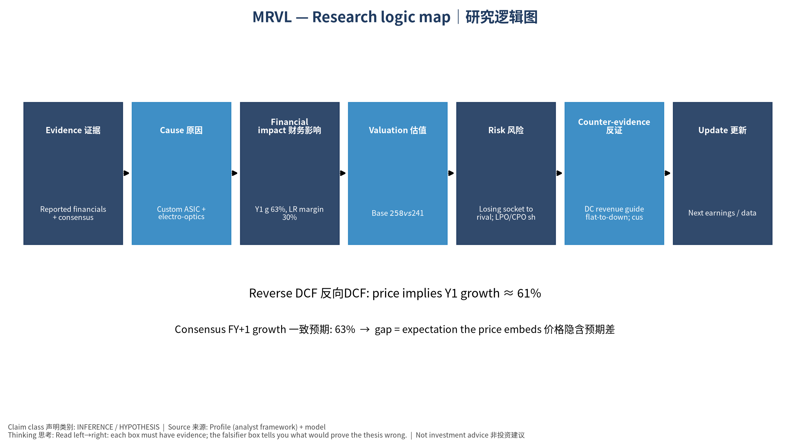

Marvell Technology, Inc. 是一家 Custom ASIC + electro-optics 定制ASIC+光电DSP 公司。现在股价 $241.24。我们的Base模型认为每股价值约 $258（6.8%）。
最近一季财报EPS实际 vs 预期: [‘2026-07-31’, ‘0.94’, ‘0.93077’, ‘0.0099’]（实际、预期、超预期%）。下次财报约 2026-12-02。
买这家公司股票≈买一棵果树。DCF就是估算果树未来每年结多少果(FCF)，再考虑”明年的一斤果不如今天的一斤果值钱”(WACC折现)。
Custom ASIC + electro-optics 定制ASIC+光电DSP 需求 → 收入增长 (g) → 自由现金流 (FCF = 收入 × FCF率) → 折现 (÷(1+WACC)^t) → 每股价值 → 与股价比较 → 预期差
设 R₀ = 过去12个月收入 = 9.5 bn USD；g₁ = 第一年增速 = 63.2%；m = 长期FCF率 = 30.0%；W = WACC = 13.2%。 第一年收入 R₁ = R₀ × (1+g₁) = 15.4 bn USD。 若第5年FCF率达到 m，则第1年FCF ≈ R₁ × m₁（m₁ 由当前 18.2% 向 30.0% 线性过渡）= 3.2 bn USD； 折现到今天: FCF₁ ÷ (1+W)¹ = 2.8 bn USD。十年加总 + 终值 = EV 232.8 bn USD。
Bear $60 / Base $258 / Bull $601；概率加权 $294。
反方: Losing socket to rival; LPO/CPO shrinks DSP TAM｜失去关键项目；LPO/CPO压缩DSP市场 失效条件: DC revenue guide flat-to-down; customer disclosures of competitor sockets｜DC收入指引持平或下降；客户披露换供应商
Marvell Technology, Inc. is a Custom ASIC + electro-optics 定制ASIC+光电DSP company. Price $241.24; our Base model value ≈ $258 (6.8%). ## ② What happened Last quarter EPS actual vs consensus: [‘2026-07-31’, ‘0.94’, ‘0.93077’, ‘0.0099’]. Next earnings ≈ 2026-12-02 (TENTATIVE). ## ③ Glossary DCF (Discounted Cash Flow｜现金流折现); FCF (Free Cash Flow｜自由现金流) = operating cash flow − capex; WACC (Weighted Average Cost of Capital｜加权平均资本成本) = the yearly return investors demand; Reverse DCF (反向DCF) = what growth the price requires; Consensus (一致预期); Falsifier (证伪指标). ## ④ Analogy Owning the stock ≈ owning a fruit tree: DCF estimates future fruit (FCF) and discounts it because fruit next year is worth less than fruit today. ## ⑤ Causal arrows Demand → revenue growth (g) → FCF (= revenue × FCF margin) → discounting ÷(1+WACC)^t → value/share → compare with price → expectation gap ## ⑥ Worked example (symbols) R₀ = TTM revenue = 9.5 bn USD; g₁ = 63.2%; m = long-run FCF margin = 30.0%; W = 13.2%. R₁ = R₀×(1+g₁) = 15.4 bn USD; FCF₁ = 3.2 bn USD; PV = FCF₁/(1+W) = 2.8 bn USD; 10 years + terminal → EV 232.8 bn USD. ## ⑦ Fact vs forecast vs market expectation Facts: reported financials, price. Forecast: our margin/scenario assumptions. Market: consensus growth 63.2%; price-implied growth 61.2%. ## ⑧ Three scenarios Bear $60 / Base $258 / Bull $601; weighted $294. ## ⑨ Counterview & failure conditions Losing socket to rival; LPO/CPO shrinks DSP TAM｜失去关键项目；LPO/CPO压缩DSP市场 — Falsifiers: DC revenue guide flat-to-down; customer disclosures of competitor sockets｜DC收入指引持平或下降；客户披露换供应商 ## Self-check 1. WACC +1pp → value up or down? 2. What does price-implied growth > consensus mean?
